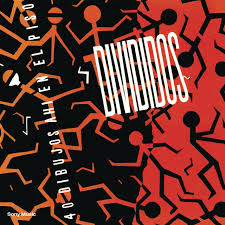
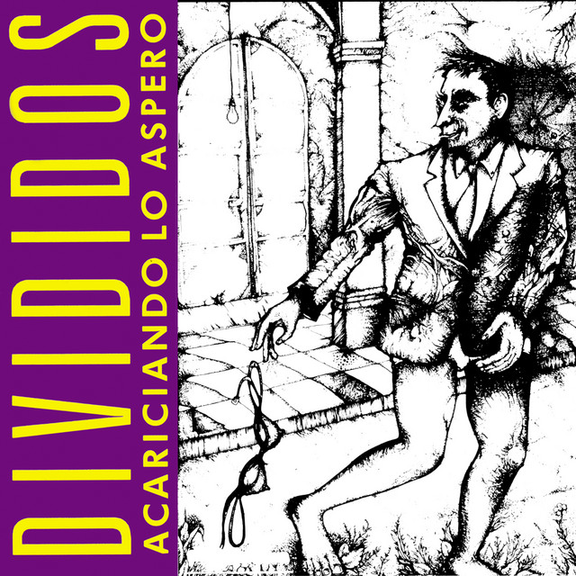
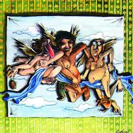
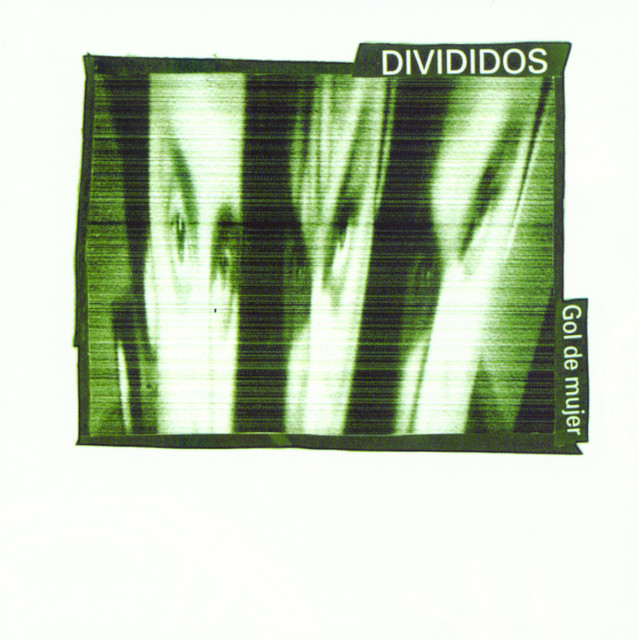
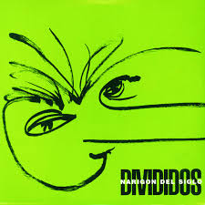
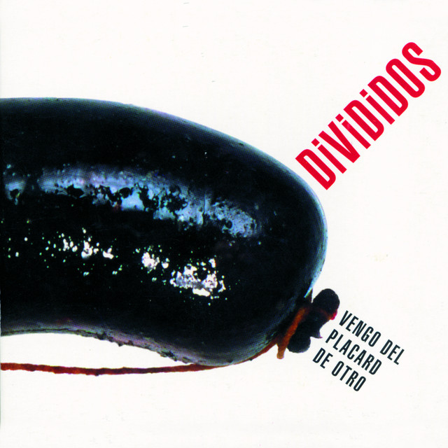
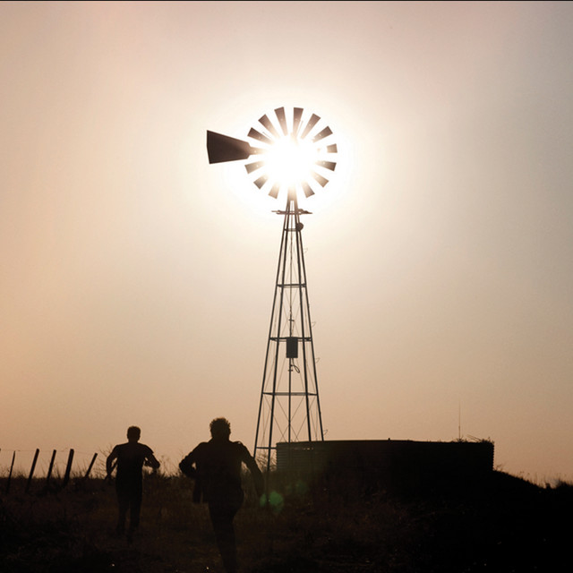
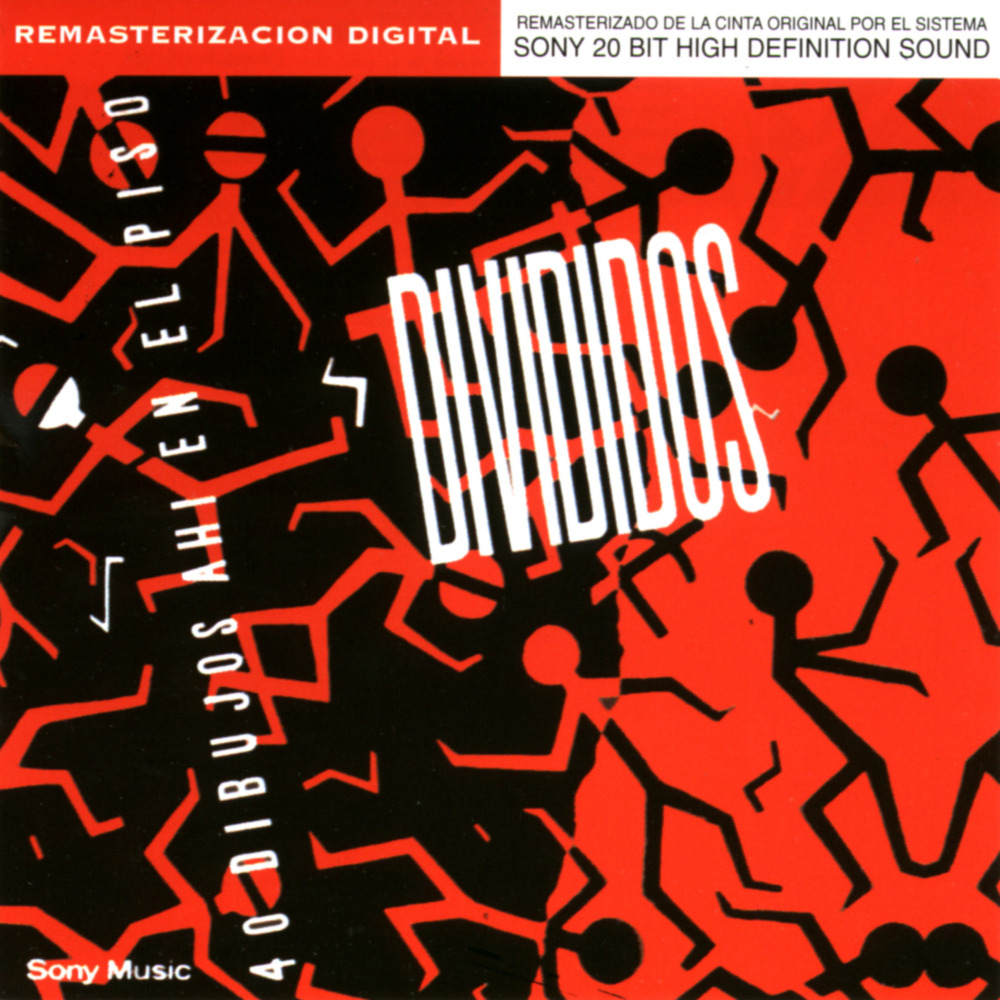
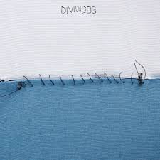

Año: 1989
Baterista: Gustavo Collado
Es el álbum debut de la banda tras la disolución de Sumo. Muestra a un grupo buscando su propia identidad musical, con una gran mezcla de estilos y un sonido que recién empezaba a gestarse.

Año: 1991
Baterista: Federico Gil Solá
Con este disco comenzó a forjarse el apodo de "La Aplanadora del Rock". Presenta un sonido mucho más pesado, ajustado y potente, incluyendo grandes clásicos del rock nacional.

Año: 1993
Baterista: Federico Gil Solá
El álbum clave que los llevó a la masividad total. Un disco repleto de éxitos y riffs memorables, y con una de las versiones de folclore rockero más aclamadas de nuestra historia.
Año: 1995
Baterista: Jorge Araujo
Un trabajo más experimental, complejo y oscuro. Marca el debut de Jorge Araujo en los parches, aportando un estilo diferente y sofisticado al ritmo del power trío.

Año: 1998
Baterista: Jorge Araujo
Un gran retorno a un sonido rockero más clásico y directo. Grabado en Estados Unidos, es un disco cargado de una potencia tremenda y hits imborrables para el público.

Año: 2000
Baterista: Jorge Araujo
Grabado en los míticos estudios Abbey Road en Londres. Un disco con una mirada muy crítica a la época, mezclando rock visceral con hermosos arreglos de cuerdas y folclore.

Año: 2002
Baterista: Jorge Araujo
Un trabajo que explora aún más la fusión de ritmos folclóricos locales con el rock pesado. Su icónica tapa de una morcilla representa el "moretón" de la sociedad argentina de esos años.

Año: 2010
Baterista: Catriel Ciavarella
Primer álbum de estudio tras una pausa de ocho años sin grabar temas nuevos. Fue editado de forma independiente y consolida la enérgica formación definitiva del trío actual.

Año: 2018
Baterista: Catriel Ciavarella
Se trata de la regrabación completa de su primer álbum. El objetivo de la banda fue recuperar sus derechos discográficos y otorgarle a esos temas antiguos el aplastante sonido de la actualidad.

Año: 2025
Baterista: Catriel Ciavarella
El gran regreso al estudio con composiciones totalmente nuevas después de 15 años de espera. Un disco con doce temas que cruza la fuerza demoledora que los caracteriza con una gran introspección.
